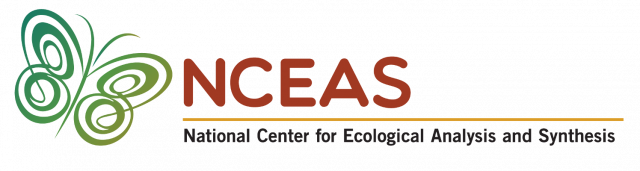

# Install the librarian package for easy package downloading
install.packages("librarian")
# Use librarian to install the other packages that you need!
librarian::shelf(shiny, htmltools, tidyverse, leaflet, lter/lterdatasampler)Overview
Welcome!

Welcome to the 2022 All Scientists’ Meeting workshop “Shiny Apps for Sharing Science”! We are excited to have you with us for this training whether you are a veteran R Shiny user or this is your first foray into the world of Shiny! The link to the workshop schedule in Sched (ASM’s scheduling site) is included here.

We will be demonstrating the fundamentals of R Shiny using RStudio today so we suggest that you download R and download RStudio before the workshop.
If your RStudio version begins with anything earlier than “2020…”, we recommend updating RStudio (see “About RStudio” in the top menu bar).
If your R version begins with anything other than “4…” we recommend you update R.
Updating RStudio and R ensures that all R packages will behave as expected and we know where any needed RStudio buttons are on your machine if you require assistance.
Also, run the following code chunk to guarantee that you have all of the packages that you need.
Note
Example Apps
The workshop guides participants through building their own Shiny App, modeled off of this one here: Shiny Workshop Example Apps. Participants will create the first two tabs of this app.
We have also created a handful of standalone scripts that create the apps we have embedded in this workshop website. You can access them via a dedicated GitHub repository and short descriptions of each app have been included in the README file at the bottom of that page.
Or, if you are not an avid GitHub user (don’t worry if that is the case!) You can download all of those example app files by clicking here.
Let’s Get To It!
We aim to make this training fun and interactive so please reach out if you have any questions before, during, or after this workshop! Our contact information is listed below:
Gabe De La Rosa: delarosa@nceas.ucsb.edu
Francisco J. Guerrero: francisco.guerrero@pnnl.gov
Nick J. Lyon: lyon@nceas.ucsb.edu
Agenda*
*Note that this agenda is subject to change. We would rather move at a pace that is comfortable for everyone rather than covering all of our planned content and leaving some people behind.
10:30a (PT) - Introductions & Workshop Overview
10:40a - Welcome to Shiny
10:50a - Shiny 101
11:15a - Build Your Own Shiny App I: Creating an Overview Tab
11:30a - Build Your Own Shiny App II: Creating a Reactive Tab
11:45a - Debrief
11:55a - Evaluation
12:00p - Done!
- Feel free to grab us after the workshop if you have questions or just want to keep the conversation going!